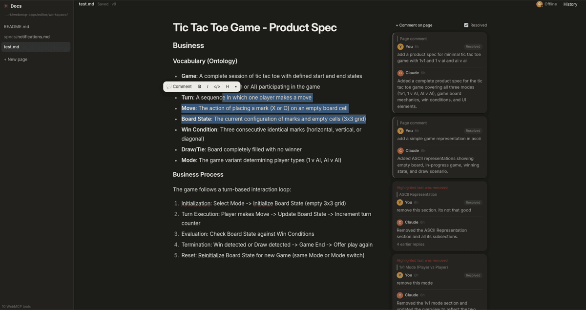
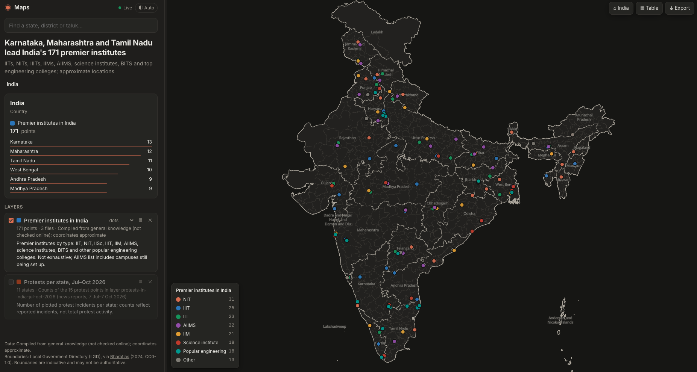

~/smarchone/webmcp-apps
Connect Claude Code to your frontend app.
No backend. No API keys. No agent SDK.
WebMCP is the wire between them.
Expose a few tools from your existing web frontend (using WebMCP), and your local Claude Code can read its state and act on it.
document.modelContextWhat is WebMCP?
WebMCP is a proposed web standard that lets a page tell an AI agent what it can do. The page registers tools (a name, a description, a JSON schema and a JavaScript function) with document.modelContext, and an agent can list and call them.
It's like MCP, but the server is the page itself. The tools run in the page, next to its state and UI, so there's nothing to deploy and no auth to wire up. This repo adds the missing piece: a small bridge that connects a local Claude Code session to those tools in your Chrome tab.
Why build this way
Most "AI features" mean a chat box, a server, an API key and a prompt you maintain. Here the page just exposes what it can do, and an agent you already run does the rest.
Any web app is an agent surface
Add tools, and Claude can read state and take actions. No chat widget needed.
You keep the full agent
The session driving your app still has your files, your shell and every other MCP server.
Small and dependency-free
Plain HTML and JS plus one Node bridge. Fork an app and ship a new one in minutes.
That's the whole integration
Tools are registered with the WebMCP API. Claude calls them.
await document.modelContext.registerTool({
name: 'add_marker',
description: 'Drop a marker on the map',
inputSchema: { type: 'object', properties: { lat: { type: 'number' } } },
async execute({ lat }) { map.addMarker(lat); return { ok: true }; },
});See it work


Also here: a dino game Claude learns to play from the physics.
Try it
Needs Node 22+, Chrome and Claude Code. No clone: add the bridge in any folder, then ask Claude to open an app.
claude mcp add webmcp -- npx -y @smarchone/webmcp-bridge
claude "Open https://smarchone.github.io/webmcp-apps/maps/ with the webmcp tools and plot the IITs in India"
claude "Open https://smarchone.github.io/webmcp-apps/dino/ with the webmcp tools and play one game"The map and the dino game are hosted right here: Chrome opens them, and Claude starts working through the bridge. Each page's install box has an Advanced section with a detailed prompt and a slash command.
Build your own by adding a page that registers tools, and describing in those tools how Claude should use them.